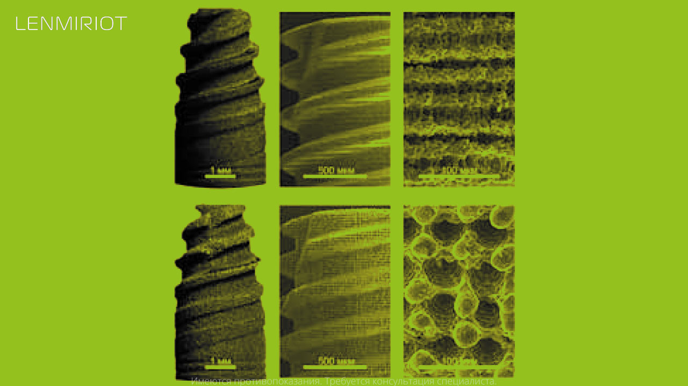
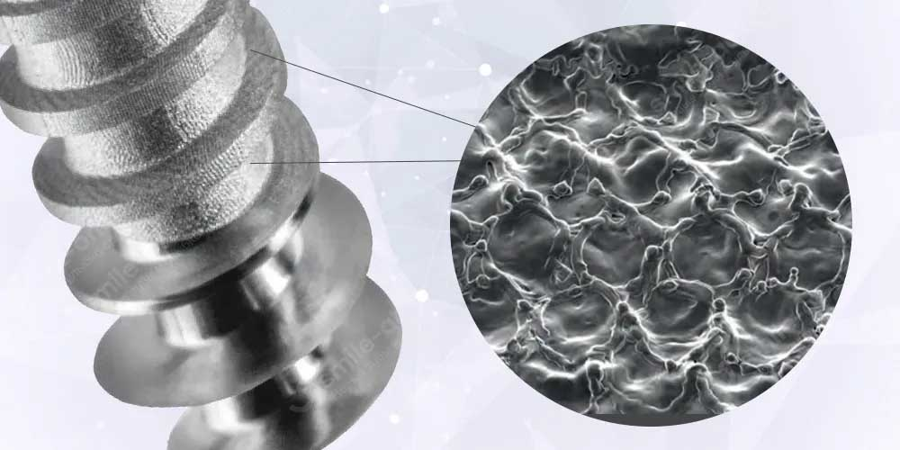

Короткий ответ: однозначного победителя нет. SLA — стандарт с 20+ годами клиники. Лазер — программируемый рельеф и РКИ, но дорогая установка. ЭЭО — дешёвая альтернатива с ограничениями, для мелких серий и R&D.
Поверхность имплантата — это то, что определяет скорость и качество остеоинтеграции, и именно поэтому вокруг методов её обработки столько маркетинга. Стандарт десятилетий — SLA (пескоструй + кислотное травление); в последние годы набирает силу лазерное текстурирование; электроэрозионное текстурирование упоминается в обзорах как третий путь. Разбираем все три — с цифрами из публикаций и без придирчивого маркетинга.

SLA: стандарт, который до сих пор не обошли
Пескоструйная обработка корундом + кислотное травление — это стохастический рельеф: случайные кратеры, микроямы, остаточные частицы абразива. Выглядит не «цифрово», но за этой технологией два десятилетия клинических данных: интеграция по кости (BIC) 50–60% через 6 недель, выживаемость имплантов выше 95–98% в больших сериях наблюдений.
Систематический обзор с конфокальной микроскопией показывает: остаточная контаминация частицами — реальный, но контролируемый риск, который производители решают маскированием резьбы и регламентом травления.
Лазерное текстурирование: цифровой рельеф с клиническими данными
Фемто- и пикосекундное лазерное текстурирование превращает поверхность из «случайной» в программируемую: паттерн задаётся в CAD, воспроизводится от детали к детали, геометрия лунок контролируется на уровне микрон.
По данным сравнительных исследований, лазер уже показал в клиническом РКИ преимущество перед SLA по первичной стабильности (ISQ 73,5 против 71,3 на 12-й неделе) и снижение бактериальной адгезии до –61% на текстурированной поверхности. Фемтосекундная обработка целого винта — порядка 40 секунд — производительность, недоступная ЭЭО.
Ограничение — стоимость: промышленная установка с фемтосекундным лазером и программным обеспечением стоит десятки миллионов рублей, поэтому даже у лидеров рынка лазер пока остаётся дополнением к SLA, а не полной заменой.
ЭЭО: третий путь
Электроэрозионная обработка формирует на поверхности регулярный рельеф из лунок, и по биологическому отклику данные есть и обнадёживающие:
- в исследовании Yamaki и соавт. угол смачивания ЭЭО-поверхности — около 0° против 40° у механически обработанной; объём новообразованной кости через неделю — 38,7% против 6,9% (животная модель);
- в обзорах ЭЭО прямо указана среди методов модификации поверхностей имплантов наряду с пескоструйной, травлением и лазером;
- в белорусской работе (БНТУ, испытания на кроликах) ЭЭО-модифицированные имплантаты показали новообразованную костную ткань по всей длине витков на 7-е сутки, тогда как у полированных — фиброзную ткань с некрозом;
- вариант PM-EDM (порошковая ЭЭО с гидроксиапатитом в диэлектрике) позволяет одновременно текстурировать поверхность и формировать биоактивный слой с антибактериальными элементами — этого SLA не умеет в принципе.
Но есть и вторая сторона — и она важна
Механические последствия ЭЭО — измеренная реальность, а не гипотеза:
- усталостная прочность снижается на 15–30% относительно фрезерованной поверхности (измерения Mower и соавт.): recast-слой, растягивающие напряжения в зоне термического влияния, микротрещины;
- водородное охрупчивание — документированный механизм деградации титановых имплантов; в водном диэлектрике разряды генерируют водород, а титан — активный поглотитель;
- клинических данных по ЭЭО-поверхностям нет — только in vitro и животные модели, тогда как у SLA два десятилетия клиники, а у лазера уже РКИ.
Замкнутый круг ЭЭО-текстуры: либо регулярный рельеф и хрупкий модифицированный слой, либо упрочняющая постобработка (например, дробеструй после ЭЭО — она восстанавливает усталостную прочность), которая сминает и обесценивает тот самый рельеф.

Сводная таблица
| Критерий | SLA | Лазер | ЭЭО |
|---|---|---|---|
| Регулярность рельефа | стохастика | высокая, программируемая | средняя (полурегулярная) |
| Доказательная база | 20+ лет клиники | РКИ | животные модели |
| Антибактериальность | нет | –61% роста бактерий | нет данных |
| Механические последствия | минимальные | минимальные | усталость –15–30%, водород, TiC |
| Встроенные частицы абразива | есть | нет | нет |
| Стоимость внедрения | низкая | высокая | низкая |
| Скорость обработки | высокая | ~40 с/винт | минуты |
Что это значит на практике
Для производителя имплантатов выбор поверхности сегодня — это выбор между SLA (стандарт, дёшево, проверено) и лазером (регулярность, клинические данные, дорогая установка). ЭЭО в этой тройке — не конкурент по качеству данных, а дешёвая альтернатива с ограничениями для тех, кому нужен заданный рельеф без CAPEX на лазер: мелкие серии, нестандартные интерфейсы, R&D-задачи, прототипирование поверхности. И обязательное условие — контроль модифицированного слоя: металлография, учёт водорода, понимание влияния на усталость.
НПО «Точные технологии» работает с ЭЭО-обработкой титана, включая задачи модификации поверхностей и изготовление электродов-инструментов. Если вы производитель медицинских изделий и рассматриваете варианты обработки поверхности — напишите, разберём применимость на вашей номенклатуре.
Обсудить задачу модификации поверхности
Или позвоните: +7 (939) 440-40-01, sale@tochtex.ru
Частые вопросы
Какой метод обработки поверхности имплантата лучше?
Однозначного победителя нет. SLA — стандарт с 20+ годами клиники. Лазер — программируемый рельеф, РКИ и антибактериальный эффект, но дорогая установка. ЭЭО — дешёвая альтернатива с ограничениями.
Можно ли использовать ЭЭО для поверхности дентального имплантата?
Да, но с ограничениями. Регулярный рельеф и обнадёживающие данные по биологическому отклику — есть. Клинических данных — нет. Механические риски (recast-слой, микротрещины, водородное охрупчивание) — реальны.
Что важнее: SLA, лазер или ЭЭО?
Зависит от задачи. Крупная серия стандарта — SLA. Премиум с антибактериальностью — лазер. Мелкие серии, нестандарт, R&D — ЭЭО.
Какие механические последствия ЭЭО поверхности имплантата?
Снижение усталостной прочности на 15–30% относительно фрезерованной, recast-слой, микротрещины, водородное охрупчивание.
Источники
- Yamaki и соавт. (обзор Frontiers in Bioengineering and Biotechnology, 2022) — гидрофильность и костный отклик ЭЭО-поверхностей.
- Mower и соавт. — «Electric discharge machining — A potential choice for surface modification of metallic implants for orthopedic applications: A review».
- Систематический обзор SLA-поверхностей с конфокальной микроскопией (ResearchGate).
- Сравнительное РКИ лазерного и SLA-текстурирования (PMC10498373; Redalyc).
- Проект EDiMplant (CORDIS, Шеффилд) — порошковая ЭЭО с биоактивными добавками.
- Монич С.Г., Киселёв и соавт. (БНТУ) — устройство и режимы ЭЭО-текстурирования имплантатов; медицинские испытания опытной партии.
Читайте также
- Электроэрозионная обработка титана: среда, электрод и подводные камни
- ЭЭО в медицинских изделиях: где нужна, а где нет
- Электроэрозионная обработка металла: полный обзор
Рассматриваете ЭЭО-текстурирование поверхности?
Обработка титана, изготовление электродов-инструментов, опытные партии. Разберём применимость на вашей номенклатуре.